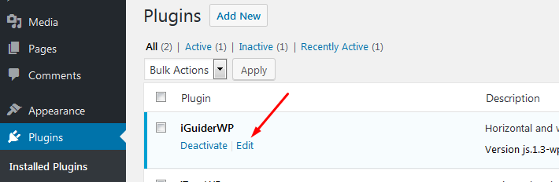
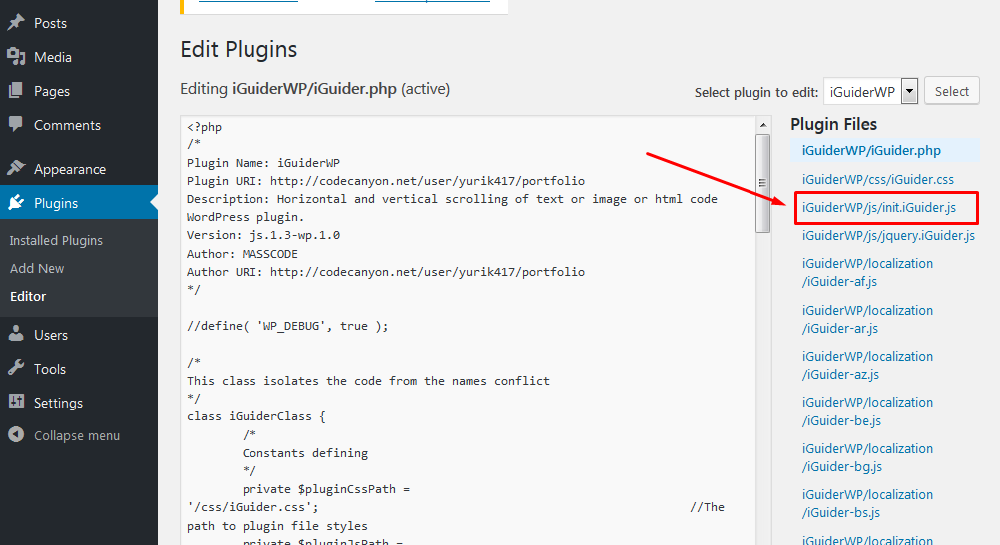
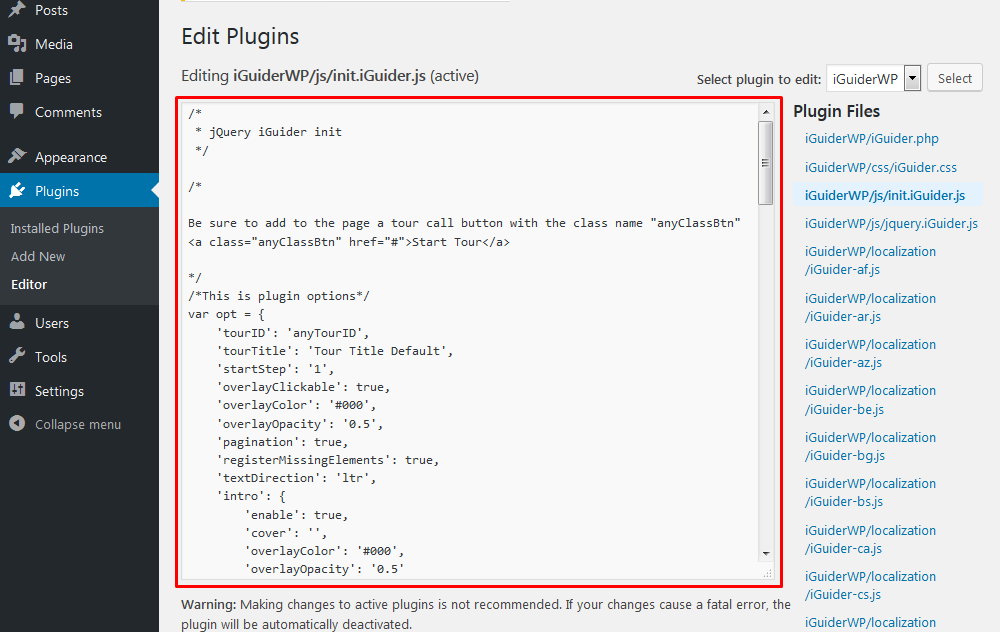
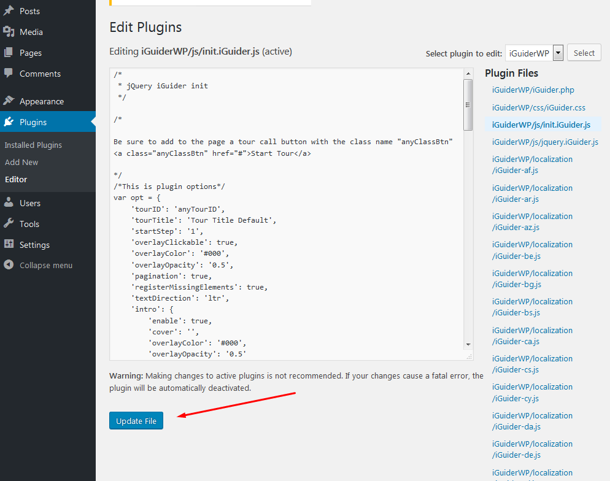
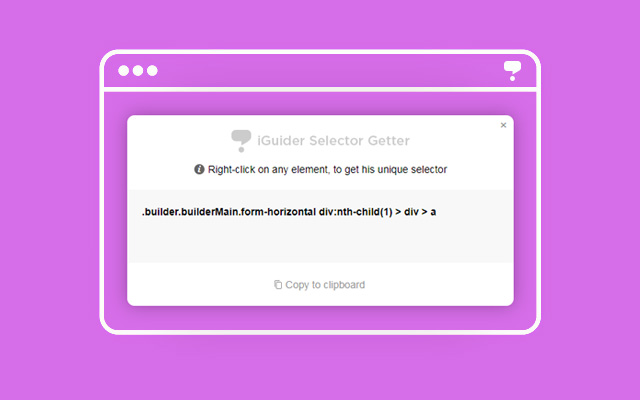
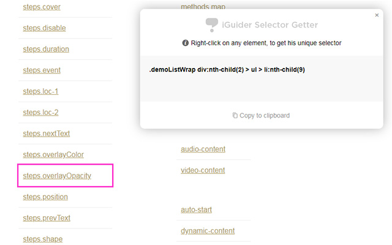

The jQuery plugin «iGuider» gives you the opportunity to tell you about the functionality of any interface. In addition, the plugin «iGuider» can perform the function of teaching, display the task, prompt you what to do and follow up on implementation of tasks. This is the most flexible and functional plugin among all his analogs.
This is the most flexible and multifunctional help-tour plugin in the world.
All parts of this plugin: CSS and javascript codes are licensed according to the license purchased from Envato.
Read more about licensing here: http://codecanyon.net/licenses
Once you have downloaded and extracted the iGuider.zip file, you should find the following directory structure:
|
/ iGuider / — css / — js / — themes / — localization / — demos / — doc_files / — chrome_extension / — wordpress_plugin / — documentation.html — demos.html — builder.html — quick-start-tpl.html |
|
| css/ | This folder contains the "iGuider.css" file which contain all the basic styles. |
| js/ | This folder contains the "jquery.iGuider.js" file which contain the global architecture. And "jquery.min.js" library. |
| themes/ | This folder contains templates and themes of the plugin. |
| localization/ | This folder contains localization files for the plugin interface. |
| demos/ | This folder contains demonstration pages for all parameters. |
| doc_files/ | This folder contains the files needed to describe the iGuider plugin. |
| chrome_extension/ | This folder contains chrome extension, which gets an unique selector code for any element on the page. |
| wordpress_plugin/ | This folder contains WordPress version of plugin. |
| documentation.html | This file contains a description of the plugin and examples of use. |
| demos.html | This file contains a list of demos. |
| builder.html | This file contains a Tour Builder, which enables Generate your tour code in a user-friendly interface. |
| quick-start-tpl.html | This file contains the minimum required code for quick connection and start the tour. |
<head> ...[THIS CODE]... </head>
<script src="js/jquery.js"></script>
<link rel="stylesheet" href="css/iGuider.css">
<script src="js/jquery.iGuider.js"></script>
<link rel="stylesheet" href="themes/material/iGuider-theme-material.css">
<script src="themes/material/iGuider-theme-material.js"></script>
Calling the plugin, you should be sure to specify the parameter "steps".
Parameter "steps" includes settings for each step of the tour.
The setting "target" should correspond to the value of the attribute "data-target" in the html code or selector name (class, id, other attributes).
You can omit the default parameters
<script>
$(window).on('load',function(){
iGuider({
tourID:'anyTourID', //This string allows you to save data with a unique name about tour progress.
//It can be used to save information on the progress of the tour for several users.
//Or save the progress of each tour separately
tourTitle:'Tour Title Default', //Tour title
tourSubtitle:'Tour Subtitle Default',
startStep:1, //Step from which the tour begins
overlayClickable:true, //This parameter enables or disables the click event for overlying layer
overlayColor:'#000', //Global color values of the overlay layer.
overlayOpacity:0.5, //Global opacity values of the overlay layer.
pagination:true, //Shows the total number of steps and the current step number
registerMissingElements:true, //Shows an absent element in tour map and find this element in DOM.
textDirection:'ltr', //Global text direction. (ltr, rtl)
shape:0, //Global shape of highlighting. 0 - rectangle (default), 1 - circle, 2 - rounded rectangle
shapeBorderRadius:5, //Global corner radius of rounded rectangle shape. Only when "shape" value is "2"
width:320, //Global width of the message block
bgColor:false, //Global background color of the message block
titleColor:false, //Global title color of the message block
modalContentColor:false, //Global content color of the message block
modalTypeColor:false, //Global modal type color of the message block
paginationColor:false, //Global pagination color of the message block
timerColor:false, //Global timer color of the message block
btnColor:false, //Global buttons color
btnHoverColor:false, //Global buttons hover color
spacing:10, //Global indent highlighting around the element
loc:false, //Global path to the page on which the step should work
timer:false, //Global time after which an automatic switching to the next step
timerType:'line', //Global timer shape type: 'line' or 'circle'
keyboard:true, //Tour control by keyboard buttons. Left - the previous step, right - the next step, Esc - close tour.
keyboardEvent:false, //This parameter sets the permission to trigger custom events.
intro:{ //Default intro settings
enable:true, //If set to true, before the tour you will see the introductory slide, which will offer to see a tour.
title:'Welcome to the interactive tour', //Title of introduction dialog
content:'This tour will tell you about the main site functionalities', //Content of introduction dialog
cover:'', //Path to the cover of intro
overlayColor:false, //For intro, you can specify the different color values of the overlay layer.
overlayOpacity:false, //For intro, you can specify the different opacity values of the overlay layer.
width:false, //Width of the intro message block
bgColor:false, //Background color of the intro message block
titleColor:false, //Title color of the intro message block
modalContentColor:false, //Content color of the intro message block
modalTypeColor:false, //Modal type color of the intro message block
btnColor:false, //Buttons color of the intro message block
btnHoverColor:false //Buttons Hover color of the intro message block
},
continue:{ //Default the continue message settings
enable:true, //This parameter add the ability to continue the unfinished tour.
title:'Continue the unfinished tour?', //Title of continue dialog
content:'Click "Continue" to start with step on which finished last time.', //Content of continue dialog
cover:'', //Path to the cover of continue message
overlayColor:false, //For continue message, you can specify the different color values of the overlay layer.
overlayOpacity:false, //For continue message, you can specify the different opacity values of the overlay layer.
width:false, //Width of the continue message block
bgColor:false, //Background color of the continue message block
titleColor:false, //Title color of the continue message block
modalContentColor:false, //Content color of the continue message block
modalTypeColor:false, //Modal type color of the continue message block
btnColor:false, //Buttons color of the continue message block
btnHoverColor:false //Buttons Hover color of the continue message block
},
tourMap: { //Default Tour Checklist settings
enable:true, //This parameter add the ability view list of steps.
position:'right', //Checklist Position
clickable:true, //Specifies the clickability of links in the checklist of steps: true - clickable, false - disabled, or 'ready' - clickable only completed steps and current
open:false, //Specifies to show or hide the Checklist at the start of the tour
bgColor:false, //Background color of the Checklist
titleColor:false, //Title color of the Checklist
btnColor:false, //Buttons color of the checklist block
btnHoverColor:false, //Buttons hover color of the checklist block
itemColor:false, //Item color of the Checklist
itemHoverColor:false, //Item hover color of the Checklist
itemActiveColor:false, //Item Active color of the Checklist
itemActiveBg:false, //Item Active BG color of the Checklist
itemNumColor:false, //Item Number color of the Checklist
checkColor:false, //Check color of the Checklist
checkReadyColor:false //Check Ready color of the Checklist
},
steps:[{ //Default step settings
cover:'', //Path to image file
title:'New Step Title', //Name of step
content:'New Step Description', //Description of step
position:'auto', //Position of message
target:'uniqueName', //Unique Name (<div data-target="uniqueName"></div>) of highlighted element or .className (<div class="className"></div>) or #idValue (<div id="idValue"></div>)
disable:false, //Block access to element
overlayOpacity:0.5, //For each step, you can specify the different opacity values of the overlay layer.
overlayColor:'#000', //For each step, you can specify the different color values of the overlay layer in HEX .
spacing:10, //Indent highlighting around the element, px
shape:0, //Shape of highlighting (0 - rectangle, 1 - circle, 2 - rounded rectangle)
shapeBorderRadius:5, //The corner radius of rounded rectangle shape. Only when "shape" value is "2"
timer:false, //The time after which an automatic switching to the next step
event:'next', //An event that you need to do to go to the next step
eventMessage:'Follow the required conditions to continue.', //Message hint for steps with custom events
skip: false, //Step can be skipped if you set parameter "skip" to true.
nextText:'Next', //The text in the Next Button
prevText:'Prev', //The text in the Prev Button
trigger:false, //An event which is generated on the selected element, in the transition from step to step
stepID:'', //Unique ID Name. This name is assigned to the "html" tag as "data-g-stepid" attribute (If not specified, the plugin generates it automatically in the form: "step-N")
waitElementTime:0, //The parameter "waitElementTime" sets the time (ms) to wait for an item to appear
loc:false, //The path to the page on which the step should work
ready:false, //This parameter indicates whether the step was completed or not.
width:320, //Width of the message block
autofocus:true, //Automatically puts the cursor in the selected form element.
bgColor:false, //Background color of the message block
titleColor:false, //Title color of the message block
modalContentColor:false, //Content color of the message block
paginationColor:false, //Pagination color of the message block
timerColor:false, //Timer color of the message block
btnColor:false, //Buttons color of the message block
btnHoverColor:false, //Buttons Hover color of the message block
keyboardEvent:false, //This parameter sets the permission to simulate user events for step.
checkNext:{ //Function in which you can carry out any verification by clicking on the "Next" button.
func:function(){return true;}, ////If the function returns True, the step will be switched.
messageError:'Fulfill all conditions!' //If the function returns "False", an error message will appear in the message window
},
checkPrev:{ //Function in which you can carry out any verification by clicking on the "Prev" button.
func:function(){return true;},
messageError:'Fulfill all conditions!'
},
before:function(target){}, //Triggered before the start of step
during:function(target){}, //Triggered after the onset of step
after:function(target){}, //Triggered After completion of the step, but before proceeding to the next
delayBefore:0, //The delay before the element search, ms
delayAfter:0 //The delay before the transition to the next step, ms
}],
lang: { //Default language settings
cancelTitle: 'Cancel Tour', //The title in the cancel tour button
cancelText: '×', //The text in the cancel tour button
hideText: 'Hide Tour Map', //The text in the hidden tour map button
tourMapText:'≡', //The text in the show tour button
tourMapTitle: 'Tour Map', //Title of Tour map button
nextTextDefault:'Next', //The text in the Next Button
prevTextDefault:'Prev', //The text in the Prev Button
endText:'End Tour', //The text in the End Tour Button
contDialogBtnBegin:'Start over', //Text in the start button of continue dialog
contDialogBtnContinue:'Continue', //Text in the continue button of continue dialog
introDialogBtnStart:'Start', //Text in the start button of introduction dialog
introDialogBtnCancel:'Cancel', //Text in the cancel button of introduction dialog
modalIntroType:'Tour Intro', //Type Name of intro dialog
modalContinueType:'Unfinished Tour' //Type Name of continue dialog
},
create: function(){}, //Triggered when the iGuider is created
start: function(){}, //Triggered before first showing the step
progress: function(data){}, //Triggered together with start any step
end: function(){}, //Triggered when the tour ended, or was interrupted
abort: function(){}, //Triggered when the tour aborted
finish: function(){}, //Triggered when step sequence is over
play: function(){}, //Triggered when the timer state switches to "play"
pause: function(){}, //Triggered when the timer state switches to "pause"
modalTemplate: //Modal window template
'<div class="gWidget">'+
'<div class="gCover">[modal-cover]</div>'+
'<div class="gAction">'+
'<span class="gType">[modal-type]</span>'+
'<span class="gBtn">[modal-map]</span>'+
'<span class="gBtn">[modal-close]</span>'+
'<div class="gTimer">[modal-timer]</div>'+
'</div>'+
'<div class="gScroll">'+
'<div class="gHeader">[modal-header]</div>'+
'<div class="gContent">[modal-body]</div>'+
'</div>'+
'<div class="gFooter">'+
'<span class="gPage">'+
'<span class="gPageVal">[step-value]</span>'+
'<span class="gPageTotal">[step-total]</span>'+
'</span>'+
'<span class="gBtn">[modal-prev]</span>'+
'<span class="gBtn">[modal-next]</span>'+
'<span class="gBtn">[modal-cancel]</span>'+
'<span class="gBtn">[modal-start]</span>'+
'<span class="gBtn">[modal-begin-first]</span>'+
'<span class="gBtn">[modal-begin-continue]</span>'+
'</div>'+
'</div>',
mapTemplate: //Tour Map template
'<div class="g-map-pos">'+
'<div class="gMapAction">'+
'<span class="gBtn">[map-toggle]</span>'+
'<span class="gBtn">[map-hide]</span>'+
'</div>'+
'<div class="gMapHeader">[map-header]</div>'+
'<span class="gPage">'+
'<span class="gPageVal">[step-value]</span>'+
'<span class="gPageTotal">[step-total]</span>'+
'</span>'+
'<div class="gMapContent">[map-content]</div>'+
'<div class="gMapBufer"></div>'+
'</div>',
debug: false //Display of messages in the console
});
})
</script>
Core CSS file iGuider.css (css/iGuider.css) in this plugin. It contains styles which are responsible for the correct plugin work.
To use the plugin you must import two files of javascript:
1. jQuery (js/jquery-3.1.1.min.js)
2. jquery.iGuider.js (js/jquery.iGuider.js)
1. jQuery is a Javascript library that greatly reduces the amount of code that you must write. If you imported this version of jQuery or any other, it is not necessary to import it for the second time. Supported by jquery 1.x , 2.x , 3.x
2. The main plugin code.
The theme consists of two files.
The square brackets with the content ID are the keys by which the plugin determines where to insert the interface elements.
/* Template "material" for iGuider plugin. */
//Modal window template
modalTpl =
'<div class="gWidget">'+
'<div class="gCover">[modal-cover]</div>'+
'<div class="gAction">'+
'<span class="gType">[modal-type]</span>'+
'<span class="gBtn">[modal-map]</span>'+
'<span class="gBtn">[modal-close]</span>'+
'<div class="gTimer">[modal-timer]</div>'+
'</div>'+
'<div class="gScroll">'+
'<div class="gHeader">[modal-header]</div>'+
'<div class="gContent">[modal-body]</div>'+
'</div>'+
'<div class="gFooter">'+
'<span class="gPage">'+
'<span class="gPageVal">[step-value]</span>'+
'<span class="gPageTotal">[step-total]</span>'+
'</span>'+
'<span class="gBtn">[modal-prev]</span>'+
'<span class="gBtn">[modal-next]</span>'+
'<span class="gBtn">[modal-cancel]</span>'+
'<span class="gBtn">[modal-start]</span>'+
'<span class="gBtn">[modal-begin-first]</span>'+
'<span class="gBtn">[modal-begin-continue]</span>'+
'</div>'+
'</div>'
//Tour Map template
mapTpl =
'<div class="g-map-pos">'+
'<div class="gMapAction">'+
'<span class="gBtn">[map-toggle]</span>'+
'<span class="gBtn">[map-hide]</span>'+
'</div>'+
'<div class="gMapHeader">[map-header]</div>'+
'<span class="gPage">'+
'<span class="gPageVal">[step-value]</span>'+
'<span class="gPageTotal">[step-total]</span>'+
'</span>'+
'<div class="gMapContent">[map-content]</div>'+
'<div class="gMapBufer"></div>'+
'</div>'
The theme styles file must be included!
Localize the iGuider help-tour language and format (English / Western formatting is the default).
The iGuider includes built-in support for languages that read right-to-left, such as Arabic and Hebrew.
To plugin interface was on the language you want, include to page the one of localization files.
These files are in the "localization" folder.
Include the file you want after including plugin files
<script src="js/jquery.js"></script>
<link rel="stylesheet" href="css/iGuider.css">
<script src="js/jquery.iGuider.js"></script>
<link rel="stylesheet" href="themes/material/iGuider-theme-material.css">
<script src="themes/material/iGuider-theme-material.js"></script>
<script src="localization/iGuider-de.js"></script>
The available languages are:
Example of use: view
Copy this code into your page or use file
"quick-start-tpl.html" from archive.
<!--Latest jQuery-->
<script src="http://code.jquery.com/jquery-latest.js"></script>
<!--iGuider Core-->
<link rel="stylesheet" href="css/iGuider.css">
<script src="js/jquery.iGuider.js"></script>
<!--iGuider Theme-->
<link rel="stylesheet" href="themes/material/iGuider-theme-material.css">
<script src="themes/material/iGuider-theme-material.js"></script>
<script>
/* iGuider Parameters */
var opt = {
'tourTitle': 'Tour Title Default',
'steps': [
{
'title': 'New Step Title',
'content': 'New Step Description',
'target': ''
}
]
};
/* iGuider Button */
$(window).on('load',function(){
iGuider('button',opt);
});
</script>
Done!
Except jQuery plugin, in the archive there is WordpPress version of plugin "iGuiderWP.zip"
The plugin is located in the folder "wordpress_plugin"
1. Install it like any other WP plugin
2. For edit the initialization file click "edit"

3. Then select the "init.iGuider.js" file


4. After editing, click the "Update" button.

| Option | Default value | Datatype | Description |
|---|---|---|---|
| tourID | "anyTourID" | String | This string allows you to save data with a unique name about tour progress. It can be used to save information on the progress of the tour for several users. Or save the progress of each tour separately. It may take the values: "any string value" |
| tourTitle | "Tour Title Default" | String | Tour title It may take the values: "any string value" |
| startStep | 1 | Number | Step from which the tour begins. It may take the values: any positive integer |
| overlayClickable | true | Boolean | If set to false, then links of steps on the tour map will not be clickable It may take the values: true or false |
| overlayColor | "#000" | String |
Global color value of overlay layer It may take the values: Any color format '#000', 'rgb(0,0,0)' or 'black' |
| overlayOpacity | 0.5 | Number |
Global opacity value of overlay layer It may take the values: any positive integer from 0 to 1 |
| pagination | true | Boolean | Shows the total number of steps and the current step number It may take the values: true or false |
| registerMissingElements | true | Boolean | Shows an absent element in tour map and find this element in DOM. It may take the values: true or false |
| textDirection | "ltr" | String | The direction property specifies the text direction/writing direction. It may take the values: 'ltr' or 'rtl' |
| shape | 0 | Number |
Global shape of highlighting. 0 - rectangle (default), 1 - circle, 2 - rounded rectangle It may take the values: 0 - rectangle (default), 1 - circle, 2 - rounded rectangle |
| shapeBorderRadius | 5 | Number |
Global corner radius of rounded rectangle shape. Only when "shape" paramenter has value "2" It may take the values: any positive number |
| width | 320 | Number / String |
Global width of the message block, px,% It may take the values: 320, '320px' or '50%' |
| spacing | 10 | Number |
Global indent highlighting around the element, px It may take the values: any positive number |
| loc | false | String | Global path to the page on which the step should work. It may take the values: "anyPagePath" |
| timer | false | Boolean / Number |
Global time after which an automatic switching to the next step It may take the values: any positive number or false |
| timerType | 'line' | String |
Global timer shape type It may take the values: 'line' or 'circle' |
| keyboard | true | Boolean |
Tour control by keyboard buttons. Left - the previous step, right - the next step, Esc - close tour. It may take the values: true or false |
| keyboardEvent | false | Boolean |
This parameter sets the permission to trigger custom events. It may take the values: true or false |
| bgColor | false | Boolean / Number |
Global background color of the message block It may take the values: Any color format '#000', 'rgb(0,0,0)', 'black' or false |
| titleColor | false | Boolean / Number |
Global title color of the message block It may take the values: Any color format '#000', 'rgb(0,0,0)', 'black' or false |
| modalContentColor | false | Boolean / Number |
Global content color of the message block It may take the values: Any color format '#000', 'rgb(0,0,0)', 'black' or false |
| modalTypeColor | false | Boolean / Number |
Global modal type color of the message block It may take the values: Any color format '#000', 'rgb(0,0,0)', 'black' or false |
| paginationColor | false | Boolean / Number |
Global pagination color of the message block It may take the values: Any color format '#000', 'rgb(0,0,0)', 'black' or false |
| timerColor | false | Boolean / Number |
Global timer color of the message block It may take the values: Any color format '#000', 'rgb(0,0,0)', 'black' or false |
| btnColor | false | Boolean / Number |
Global buttons color It may take the values: Any color format '#000', 'rgb(0,0,0)', 'black' or false |
| btnHoverColor | false | Boolean / Number |
Global buttons hover color It may take the values: Any color format '#000', 'rgb(0,0,0)', 'black' or false |
| intro |
|
Object | It contains parameters of the intro message It may take the values: objects |
| intro.enable | true | Boolean | If set to true, before the tour you will see the introductory slide, which will offer to see a tour. It may take the values: false or true |
| intro.cover | String | Path to the cover of intro. It may take the values: "Path to the cover" |
|
| intro.title | "Welcome to the interactive tour" | String | Title of introduction dialog It may take the values: "any string value" |
| intro.content | "This tour will tell you about the main site functionalities" | String | Content of introduction dialog It may take the values: "any string value" |
| intro.overlayColor | false | String / Boolean |
Color value of overlay layer for intro It may take the values: Any color format '#000', 'rgb(0,0,0)', 'black' or false |
| intro.overlayOpacity | false | Number |
Opacity value of overlay layer for intro It may take the values: any positive integer from 0 to 1 or false |
| intro.width | false | Number / String / Boolean |
Width of the message intro block, px,% It may take the values: 320, '320px', '50%' or false |
| intro.bgColor | false | Boolean / Number |
Background color of the intro message block It may take the values: Any color format '#000', 'rgb(0,0,0)', 'black' or false |
| intro.titleColor | false | Boolean / Number |
Title color of the intro message block It may take the values: Any color format '#000', 'rgb(0,0,0)', 'black' or false |
| intro.modalContentColor | false | Boolean / Number |
Content color of the intro message block It may take the values: Any color format '#000', 'rgb(0,0,0)', 'black' or false |
| intro.modalTypeColor | false | Boolean / Number |
Modal type color of the intro message block It may take the values: Any color format '#000', 'rgb(0,0,0)', 'black' or false |
| intro.btnColor | false | Boolean / Number |
Buttons color of the intro message block It may take the values: Any color format '#000', 'rgb(0,0,0)', 'black' or false |
| intro.btnHoverColor | false | Boolean / Number |
Buttons Hover color of the intro message block It may take the values: Any color format '#000', 'rgb(0,0,0)', 'black' or false |
| continue |
|
Object | It contains parameters of the continue message It may take the values: objects |
| continue.enable | true | Boolean | This parameter add the ability to continue the unfinished tour. It may take the values: false or true |
| continue.cover | String | Path to the cover of continue message. It may take the values: "Path to the cover" |
|
| continue.title | "Continue the unfinished tour?" | String | Title of continue dialog It may take the values: "any string value" |
| continue.content | "Click \"Continue\" to start with step on which finished last time." | String | Content of continue dialog It may take the values: "any string value" |
| continue.overlayColor | false | String / Boolean |
Color value of overlay layer for continue message It may take the values: Any color format '#000', 'rgb(0,0,0)', 'black' or false |
| continue.overlayOpacity | false | Number / Boolean |
Opacity value of overlay layer for continue message It may take the values: any positive integer from 0 to 1 or false |
| continue.width | false | Number / String / Boolean |
Width of the message continue block, px,% It may take the values: 320, '320px', '50%' or false |
| continue.bgColor | false | Boolean / Number |
Background color of the continue message block It may take the values: Any color format '#000', 'rgb(0,0,0)', 'black' or false |
| continue.titleColor | false | Boolean / Number |
Title color of the continue message block It may take the values: Any color format '#000', 'rgb(0,0,0)', 'black' or false |
| continue.modalContentColor | false | Boolean / Number |
Content color of the continue message block It may take the values: Any color format '#000', 'rgb(0,0,0)', 'black' or false |
| continue.modalTypeColor | false | Boolean / Number |
Modal type color of the continue message block It may take the values: Any color format '#000', 'rgb(0,0,0)', 'black' or false |
| continue.btnColor | false | Boolean / Number |
Buttons color of the continue message block It may take the values: Any color format '#000', 'rgb(0,0,0)', 'black' or false |
| continue.btnHoverColor | false | Boolean / Number |
Buttons Hover color of the continue message block It may take the values: Any color format '#000', 'rgb(0,0,0)', 'black' or false |
| tourMap |
|
Object | It contains parameters of the Tour Map It may take the values: objects |
| tourMap.enable | true | Boolean | This parameter add the ability view list of steps. It may take the values: false or true |
| tourMap.position | "right" | String | Tour Map Position It may take the values: "right" or "left" |
| tourMap.clickable | true | Boolean | If set to false, then links of steps on the tour map will not be clickable It may take the values: true - clickable, false - disabled, or 'ready' - clickable only completed steps and current |
| tourMap.open | false | Boolean | Specifies to show or hide the map of the tour at the start of the tour It may take the values: false or true |
| tourMap.bgColor | false | Boolean / Number |
Background color of the Checklist It may take the values: Any color format '#000', 'rgb(0,0,0)', 'black' or false |
| tourMap.titleColor | false | Boolean / Number |
Title color of the Checklist It may take the values: Any color format '#000', 'rgb(0,0,0)', 'black' or false |
| tourMap.btnColor | false | Boolean / Number |
Buttons color of the checklist block It may take the values: Any color format '#000', 'rgb(0,0,0)', 'black' or false |
| tourMap.btnHoverColor | false | Boolean / Number |
Buttons hover color of the checklist block It may take the values: Any color format '#000', 'rgb(0,0,0)', 'black' or false |
| tourMap.itemColor | false | Boolean / Number |
Item color of the Checklist It may take the values: Any color format '#000', 'rgb(0,0,0)', 'black' or false |
| tourMap.itemHoverColor | false | Boolean / Number |
Item hover color of the Checklist It may take the values: Any color format '#000', 'rgb(0,0,0)', 'black' or false |
| tourMap.itemActiveColor | false | Boolean / Number |
Item Active color of the Checklist It may take the values: Any color format '#000', 'rgb(0,0,0)', 'black' or false |
| tourMap.itemActiveBg | false | Boolean / Number |
Item Active BG color of the Checklist It may take the values: Any color format '#000', 'rgb(0,0,0)', 'black' or false |
| tourMap.itemNumColor | false | Boolean / Number |
Step Number color in the Checklist It may take the values: Any color format '#000', 'rgb(0,0,0)', 'black' or false |
| tourMap.checkColor | false | Boolean / Number |
Check color of the Checklist It may take the values: Any color format '#000', 'rgb(0,0,0)', 'black' or false |
| tourMap.checkReadyColor | false | Boolean / Number |
Check Ready color of the Checklist It may take the values: Any color format '#000', 'rgb(0,0,0)', 'black' or false |
| steps |
|
Array | Specifies information about each step of the tour It may take the values: array of objects |
| steps[n].cover | false | Boolean / String | Path to image file It may take the values: false or string value of path to image |
| steps[n].title | "New Step Title" | String | Title of step It may take the values: "any string value" |
| steps[n].content | "New Step Description" | String | Description of step It may take the values: "any string value" |
| steps[n].position | "auto" | String | Position of message. "auto" - The plugin can automatically choose the best position out of 36 available to display a tour's message. "center" - The message is displayed in the center of screen and no element is highlighted. The parameter 'target' in this case is not required! "xxx" - Code which indicates the position of the window with the message tll, tlc, tlr, tcl, tcc, tcr, trl, trc, trr, rtt, rtc, rtb, rct, rcc, rcb, rbt, rbc, rbb, brr, brc, brl, bcr, bcc, bcl, blr, blc, bll, lbb, lbc, lbt, lcb, lcc, lct, ltb, ltc, ltt "xxx" - First Symbol: The position of message a relatively selected item. "xxx" - Second Symbol: The position of corner a relatively selected item. "xxx" - Third Symbol: The position of the window with a message a relatively coner. |
| steps[n].target | "" | String |
It may take the values: "any string value" |
| steps[n].disable | false | Boolean |
Block access to element It may take the values: false or true |
| steps[n].overlayOpacity | 0.5 | Number |
Opacity value of overlay layer It may take the values: any positive number from 0 to 1 |
| steps[n].overlayColor | "#000" | Number |
Clor value of overlay layer It may take the values: Any color format '#000', 'rgb(0,0,0)' or 'black' |
| steps[n].spacing | 10 | Number |
Indent highlighting around the element, px It may take the values: any positive number |
| steps[n].shape | 0 | Number |
Shape of highlighting It may take the values: 0 - rectangle (default), 1 - circle, 2 - rounded rectangle |
| steps[n].shapeBorderRadius | 5 | Number |
The corner radius of rounded rectangle shape. Only when "shape" paramenter has value "2" It may take the values: any positive number |
| steps[n].timer | false | Boolean / Number |
The time after which an automatic switching to the next step, ms It may take the values: any positive number or false |
| steps[n].event | "next" | String / Array |
An event that you need to do to go to the next step It may take the values: "next", "click", "mousedown", "mouseup", "mouseenter", "keydown", "keyup", "blur", "submit" and others jQuery events. If you want to listen for the event in another element, then use the array construction. The first array element is an "event", the second element is a jQuery objectIt may take the values: ["eventName","yourSelector"] |
| steps[n].eventMessage | "Follow the required conditions to continue." | String |
Message hint for steps with custom events It may take the values: any text. |
| steps[n].skip | false | Boolean |
Step can be skipped if you set parameter "skip" to true. It may take the values: false or true. |
| steps[n].nextText | "Next" | String |
The text in the Next Button It may take the values: "any string value" |
| steps[n].prevText | "Prev" | String |
The text in the Prev Button It may take the values: "any string value" |
| steps[n].trigger | false | String / Boolean |
An event which is generated on the selected element, in the transition from step to step. jQuery events It may take the values: Name of Event or false |
| steps[n].stepID | false | String |
Unique ID Name. This name is assigned to the "html" tag as "data-g-stepid" attribute (If not specified, the plugin generates it automatically in the form: "step-N") It may take the values: "any string value" |
| steps[n].waitElementTime | 0 | Number |
The parameter "waitElementTime" sets the time (ms) to wait for an item to appear It may take the values: any positive number |
| steps[n].loc | false | String | The path to the page on which the step should work. It may take the values: "anyPagePath" |
| steps[n].ready | false | Boolean |
This parameter indicates whether the step was completed or not. It may take the values: false or true. |
| steps[n].width | 320 | Number / String |
For more convenient display of content, you can adjust the width of the message window. If you do not specify the width of the window, it will accept the default value. It may take the values (for example): 500, '500px' or '500%'. |
| steps[n].autofocus | true | Boolean |
Automatically puts the cursor in the selected form element. It will accept the default value. It may take the values: true or false. |
| steps[n].keyboardEvent | false | Boolean |
This parameter sets the permission to trigger custom events for current step. It may take the values: true or false |
| steps[n].bgColor | false | Boolean / Number |
Background color of the message block It may take the values: Any color format '#000', 'rgb(0,0,0)', 'black' or false |
| steps[n].titleColor | false | Boolean / Number |
Title color of the message block It may take the values: Any color format '#000', 'rgb(0,0,0)', 'black' or false |
| steps[n].modalContentColor | false | Boolean / Number |
Content color of the message block It may take the values: Any color format '#000', 'rgb(0,0,0)', 'black' or false |
| steps[n].paginationColor | false | Boolean / Number |
Pagination color of the message block It may take the values: Any color format '#000', 'rgb(0,0,0)', 'black' or false |
| steps[n].timerColor | false | Boolean / Number |
Timer color of the message block It may take the values: Any color format '#000', 'rgb(0,0,0)', 'black' or false |
| steps[n].btnColor | false | Boolean / Number |
Buttons color of the message block It may take the values: Any color format '#000', 'rgb(0,0,0)', 'black' or false |
| steps[n].btnHoverColor | false | Boolean / Number |
Buttons Hover color of the message block It may take the values: Any color format '#000', 'rgb(0,0,0)', 'black' or false |
| steps[n].checkNext |
|
Object |
An object containing parameters that set conditions for the transition between steps to forward. It may take the values: array of objects. |
| steps[n].checkNext.func | |
Function |
Function in which you can carry out any verification by clicking on the "Next" button. If the function returns True, the step will be switched. It must return the values: false or true. |
| steps[n].checkNext.messageError | "Fulfill all the conditions!" | String |
If the function returns "False" (steps[n].checkNext.func), an error message will appear in the message window It may take the values: any text |
| steps[n].checkPrev |
|
Object |
An object containing parameters that set conditions for the transition between steps to back. It may take the values: array of objects. |
| steps[n].checkPrev.func | |
Function |
Function in which you can carry out any verification by clicking on the "Prev" button. If the function returns True, the step will be switched. It must return the values: false or true. |
| steps[n].checkPrev.messageError | "Fulfill all the conditions!" | String |
If the function returns "False" (steps[n].checkPrev.func), an error message will appear in the message window It may take the values: any text |
| steps[n].delayBefore | 0 | Number | The delay before the element search, ms It may take the values: any positive number |
| steps[n].delayAfter | 0 | Number | The delay before the transition to the next step, ms It may take the values: any positive number |
| lang |
|
Object | It contains information about the text of the interface elements It may take the values: objects |
| lang.cancelTitle | "Cancel Tour" | String | The ttitle in the cancel tour button It may take the values: "any string value" |
| lang.cancelText | "×" | String | The text in the cancel tour button It may take the values: "any string value" |
| lang.hideText | "Hide Tour Map" | String | The text in the hidden tour map button It may take the values: "any string value" |
| lang.tourMapText | "≡" | String | The text in the show tour button It may take the values: "any string value" |
| lang.tourMapTitle | "Tour Map" | String | Title of Tour map button It may take the values: "any string value" |
| lang.nextTextDefault | "Next" | String | The text in the Next Button It may take the values: "any string value" |
| lang.prevTextDefault | "Prev" | String | The text in the Prev Button It may take the values: "any string value" |
| lang.endText | "End Tour" | String | Sets the text for the close button in the last step of the tour It may take the values: "any string value" |
| lang.contDialogBtnBegin | "Start from beginning" | String | Text in the start button of continue dialog It may take the values: "any string value" |
| lang.contDialogBtnContinue | "Continue" | String | Text in the continue button of continue dialog It may take the values: "any string value" |
| lang.introDialogBtnStart | "Start" | String | Text in the start button of introduction dialog It may take the values: "any string value" |
| lang.introDialogBtnCancel | "Cancel" | String | Text in the cancel button of introduction dialog It may take the values: "any string value" |
| lang.modalIntroType | "Tour Intro" | String | Type Name of intro dialog It may take the values: "any string value" |
| lang.modalContinueType | "Unfinished Tour" | String | Type Name of continue dialog It may take the values: "any string value" |
| modalTemplate |
|
String | Modal window template It may take the values: objects |
| mapTemplate |
|
String | Tour Map template It may take the values: objects |
| debug | false | boolean |
Display of messages in the console It may take the values: false or true. |
prev() |
Switches the tour to the previous step This method does not accept any arguments |
next() |
Switches the tour to the next step This method does not accept any arguments |
update() |
Updating the position of elements highlighting This method does not accept any arguments |
map(position) |
Sets the tour map in the specified part of the screen
position Type: String
Map Tour position: "left","right" or "toggle"
"toggle" - changes position to the opposite.
|
destroy() |
Removes all effects of plugin. It returns all elements in the condition before the initialization of the plugin This method does not accept any arguments |
setStep(number) |
This method switches the tour to the specified step.
number Type: String or Number
Step number
|
getStep() |
This method returns the active step number. This method does not accept any arguments |
timerState(state) |
This method switches the auto-viewing between states: "play" and "pause".
state Type: String
timer state: "play" or "pause"
|
design(type) |
This method allows you to fix the state of the message block at any stage of the tour.
type Type: String
message type: "intro", "continue" or step number. f.e. "3"
|
button(options) |
This method shows the preset button to display and start the tour list.
options Type: Object (for one tour) or Array (for several tours)
|
set(options) |
This method declares a set of parameters for one or several tours in order to be able to run the tour by referring to this set by a unique identifier.
options Type: Array
The name of the method "set" is optional. |
run(id) |
This method starts a tour from the parameter set that matches the passed identifier by "set" method.
id Type: String
|
setTitle(text) |
This method allows you to change the name of the step in the information window.
type Type: String
message type: any string or html code
|
setContent(text) |
This method allows you to change description of the step in the information window.
type Type: String
message type: any string or html code
|
create() |
Triggered when the plugin is created |
start() |
Triggered before first showing the step |
progress() |
Triggered together with start any step
data Type:object
data.step - Step number
data.steps - Total number of steps
|
end() |
Triggered when the tour ended, or was interrupted |
abort() |
Triggered when the tour aborted |
finish() |
Triggered when step sequence is over. |
steps[n].before() |
Triggered before the start of step |
steps[n].during() |
Triggered after the onset of step |
steps[n].after() |
Triggered After completion of the step, but before proceeding to the next |
play() |
Triggered when the timer state switches to "play". |
pause() |
Triggered when the timer state switches to "pause". |
data-iguider |
This is interactive data-attribute "data-iguider". In this attribute, you can specify the ID of the tour. If the tour parameters with this identifier were previously declared in the parameter set by the "set" method, then by clicking on the element with the data-attribute, the tour corresponding to the ID will be launched. |
Addition to the iGuider and iTour plugins.
Gets an unique selector code for any element on the page.

Select one of the options

After turning on the extension, you will see the boundaries of the page elements by hovering the mouse over them. When you right-click on any element of the page, you get a unique selector code for this element. This code will be displayed in a popup fixed window.
auto-viewingAfter you receive the selector code, you can save it to the clipboard, and then paste it into the iGuider plugin initialization code. Popup window can be moved in the any place of your screen, that it does not block the elements you need.